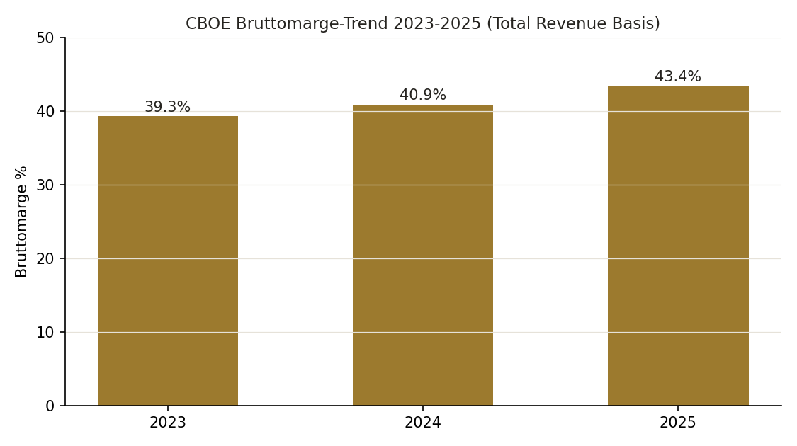
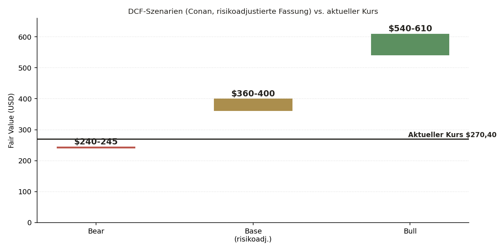
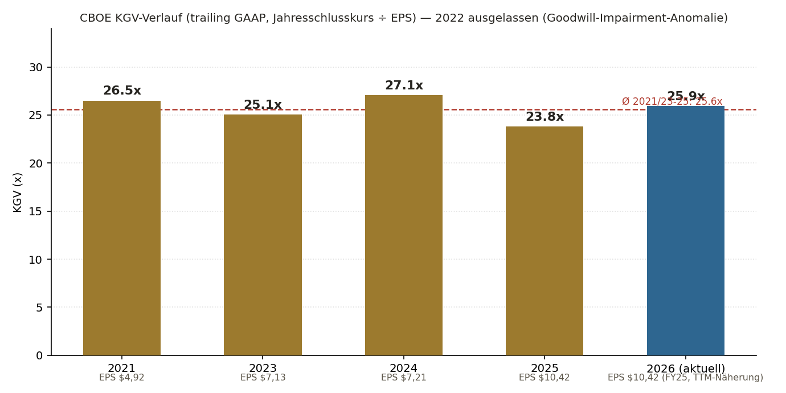
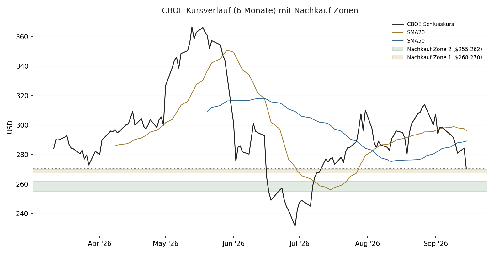

Das operative Geschäft. Cboe lieferte im Q2 2026 Rekord-Net-Revenue ($731,6 Mio., +25% YoY), Diluted EPS +50%, Adjusted EPS +45% — getrieben von Optionsvolumen, Data Vantage und der proprietären SPX-/VIX-Franchise. Die 2026er-Guidance wurde bereits zweimal angehoben (zuletzt auf "mid to high teens" organisches Net-Revenue-Wachstum). Bruttomarge expandiert real seit 2023 (39,3%→40,9%→43,4%), Bilanz Netto-Cash, Dividende zum 16. Mal in Folge erhöht (+19%).
Der Kurs. Am 15.09.2026 fiel die Aktie -4,96% — deutlich mehr als die direkten Peers (ICE -0,54%, CME -1,91%, NDAQ -2,56%) am selben, sektorweit schwachen Tag (US-10J-Rendite auf 5,041%, höchster Stand seit Juli 2007, FOMC-Vortag). Kein CBOE-spezifischer Negativ-Auslöser gefunden. Technisch bleibt das Bild aber kurzfristig schwach: Kurs unter allen gleitenden Durchschnitten, Momentum-Rating WEAK (Details Seite 9).
Der zentrale Bewertungsbefund. Alle drei unabhängigen DCF-Rechnungen (Jarvis, JJ, Conan) kommen strukturell über dem Analysten-Konsens ($292-318) heraus — der WACC-Terminal-g-Spread ist bei CBOEs niedrigem Beta extrem eng (Terminal-Value-Anteil 84-87% EV). Details Seite 5.
Der Cross-Check-Befund. 2 von 3 unabhängigen Beinen (JJ, Conan) kommen auf KAUFEN — gestützt durch einen Peer-EV/EBITDA-Abschlag. Die eigene TA-Rechnung (Seite 9) bestätigt: fundamental attraktive Zone, aber Technik noch nicht bestätigt — daher gestaffelter Nachkauf statt sofortiger voller Position.
BEOBACHTEN
Technik schwach (unter 200D-SMA, OBV fallend) · Tier 3
KAUFEN
Mechanisch aus DCF · Tier 2
KAUFEN, gestaffelt
DCF bewusst gedämpft · Tier 2 (3-5%)
CBOE ist ein kapitalleichtes Börsen-/Derivate-Quasi-Monopol mit einer SPX-/VIX-Exklusivlizenz, das operativ so stark wie selten läuft (Rekord-Net-Revenue, zwei Guidance-Anhebungen 2026, expandierende Bruttomarge, Netto-Cash-Bilanz) — und trotzdem mit einem Abschlag zu seinen direkten Peers (ICE/CME/NDAQ) gehandelt wird. Der Kursrücksetzer vom 15.09. war sektorweit, kein CBOE-spezifisches Problem. Aber: die Bewertungslücke ist real, rechtfertigt aber keinen bedingungslosen Kauf — alle drei unabhängigen DCF-Rechnungen sind wegen CBOEs niedrigem Beta strukturell terminalwert-getrieben (dazu mehr auf Seite 5) und damit für sich allein kein hartes Kaufsignal. Das KAUFEN-Rating stützt sich deshalb zusätzlich auf Peer-Vergleich und Analysten-Konsens, und die Umsetzung erfolgt bewusst gestaffelt, weil die Technik der Bewertung aktuell hinterherhinkt (Seite 9).
Peer-Abschlag trotz besserer Kennzahlen (EV/EBITDA 14,25x vs. 17,3x Median), starker Moat, Netto-Cash-Bilanz, zwei Guidance-Anhebungen 2026, kein CBOE-spezifischer Auslöser für den Rücksetzer.
DCF-Fair-Values ($360-484) sind wegen niedrigem Beta stark terminalwert-getrieben (TV-Anteil 84-87% EV) — allein kein hartes Signal. Technik aktuell WEAK, Timing-Konflikt Bewertung vs. Technik.
Q3-2026-Earnings (30.10., Konsens EPS $3,43), Januar-2027-Notes-Fälligkeit ($650 Mio.), aufkommende Prediction-Market-Konkurrenz (Polymarket), technische Bestätigung (RSI>45, MACD-Boden, OBV-Wechsel).
KAUFEN, gestaffelt. Tranche 1 bei Stabilisierung $268-270 (~1,5-2%), Tranche 2 bei $255-262. Keine automatische Order — technische Bestätigung vor Tranche 1 Pflicht.
| Kriterium | Schwelle | Ist-Wert (3 Beine) | Status |
|---|---|---|---|
| K-Kriterien (Gatekeeper) | |||
| ROIC | >20% | Jarvis 26,9% ✅ · JJ 16,9% ❌ (konservative Quelle gewählt) · Conan 23-29% ✅ — Quellenstreuung, Tendenz erfüllt | 🟡 Grenzfall |
| Op. Leverage | Ja/Nein | Alle drei: Ja — H1 2026 Op.Income +41,6% bei Net-Revenue +26,7% | ✅ Erfüllt |
| EPS-CAGR (5J) | ≥12% | ~19,6-21% (alle drei, ex 2022-Goodwill-Impairment-Digital-Anomalie, real erklärt) | ✅ Erfüllt |
| ROE | >15% | 25-26,3% (alle drei konvergent) | ✅ Erfüllt |
| Piotroski-Override Ersatz-K-Kriterien | |||
| ROE-Trend (3J) | stabil/steigend | Steigend (alle drei) | ✅ Erfüllt |
| Fee-Marge-Trend (3J) | stabil/steigend | Adj. Op. Margin 61,4% FY24 → 65,6% FY25 → 67,2% H1'26 | ✅ Erfüllt |
| E-Kriterien | |||
| Op. Margin (GAAP-TTM) | ≥20% | 36-67% je Basis (Gross- vs. Net-Revenue) — deutlich erfüllt | ✅ Erfüllt |
| Revenue-CAGR (5J) | ≥8-10% | 7,0-7,8% (knapp verfehlt) · Net-Revenue-CAGR höher (~12%) | 🟡 Grenzfall |
| Net Debt/EBITDA | <2,0x | Negativ — Netto-Cash-Position $0,77-0,83 Mrd. | ✅ Erfüllt, sehr stark |
| Capex/Umsatz | ≤5% | 1,7-3,6% je Periode | ✅ Erfüllt |
| SBC-Infection-Check | <15% Umsatz / <2% Verwässerung | SBC FY2025 $50,4 Mio. = 1,1% Total-/2,1% Net-Revenue · Share Count stabil | ✅ Kein Flag |
DNA-Urteil: K 4/4 (ROIC/Revenue-CAGR grenzwertig je Quelle, aber Ersatzkriterien klar erfüllt) · E 4/4 deutlich erfüllt. Kein Abbruch, solide bis starke Qualität — die Quellenstreuung bei ROIC/Revenue-CAGR ist ein bekanntes Definitions-/Zeitraum-Problem (Gross- vs. Net-Revenue-Basis), kein Substanzproblem.
SPX-/VIX-Exklusivlizenz mit S&P Global (>98% des US-Index-Optionsvolumens über CBOE-Venues), starke Netzwerkeffekte (Liquidität zieht Liquidität), hohe Switching-Costs für institutionelle Marktteilnehmer. Randgeschäfte (Cboe Japan, Digital/Krypto, Australien/Kanada-Verkauf an TMX) eingestellt — Portfoliofokussierung, kein Moat-Verfall im Kern.
Guidance 2026 zweimal angehoben, Dividende 16. Jahr in Folge erhöht (+19%), Buyback-Ermächtigung $536,8 Mio. offen. Tonalität in Earnings Calls durchweg positiv, kein Dodge-Factor erkennbar. Offene Punkte: Insider-Ownership/-Käufe nicht belegt, Buyback-Timing ggü. Fair Value nicht sauber nachweisbar.
| Jahr | Total Rev. | Net Rev. | EPS | FCF |
|---|---|---|---|---|
| 2021 | 3.495 | – | 4,92 | 545,8 |
| 2022 | 3.959 | – | 2,19* | 591,3 |
| 2023 | 3.774 | 1.918 | 7,13 | 1.031 |
| 2024 | 4.095 | 2.072 | 7,21 | 1.040 |
| 2025 | 4.714 | 2.429 | 10,42 | 1.682 |
| H1'26 | – | 1.460,5 | – | – |
*2022 durch einmaligen Goodwill-Impairment (eingestelltes "Cboe Digital"-Krypto-Geschäft) verzerrt, real recherchiert und erklärt. Ohne diesen Ausreißer EPS-CAGR konsistent ~20-21%/Jahr.

Keine Erosion — echte Expansion: 39,3% (2023) → 40,9% (2024) → 43,4% (2025), auf Total-Revenue-Basis, real aus den SEC-ARS-Filings. Getrieben durch Umsatzwachstum, das schneller steigt als Cost-of-Revenue (Section-31-Gebühren, Liquiditätszahlungen). Kein Warnsignal.
| Zeitpunkt | Guidance | Tatsächlich/Update | Ergebnis |
|---|---|---|---|
| Anfang 2026 | Organisches Net-Revenue-Wachstum "low double-digit to mid teens" | Nach Q1 2026 angehoben | 🟢 Beat + Upgrade |
| Nach Q1 2026 | "low double-digit to mid teens" | Nach Q2 2026 erneut angehoben | 🟢 Beat + Upgrade |
| Nach Q2 2026 (aktuell) | "mid to high teens" | ausstehend (Q3 2026, 30.10.) | — |
Zwei Guidance-Anhebungen in Folge im laufenden Jahr — starker, konsistenter Beat-and-Raise-Track-Record 2026.
Bookings/Backlog-Wedge-Analyse (Rigor-Punkt 42): entfällt ersatzlos. CBOEs Kerngeschäft ist transaktionsgebührenbasiert (Handelsvolumen), keine Lizenz→Subscription-Transformation erkennbar — die Wachstumsdivergenz-Logik (Bookings/Backlog wachsen schneller als Umsatz) ist hier nicht anwendbar. Data Vantage (Marktdaten-Abonnements) ist zwar recurring-artig, aber zu klein/stabil für einen aussagekräftigen Wedge-Vergleich.
| Fälligkeit | Betrag | Kupon | Risiko |
|---|---|---|---|
| Januar 2027 | $650 Mio. | 3,650% | 🟡 Refinanzierung in höherem Zinsumfeld |
| 2030 / 2032 | $500/$300 Mio. | 1,625%/3,000% | 🟢 Unkritisch |
Netto-Cash ($0,77-0,83 Mrd.) plus ~$2,7 Mrd. verfügbare Liquidität decken die Januar-2027-Fälligkeit vollständig ab — Risiko NIEDRIG bis ERHÖHT (nicht KRITISCH).
Verwässerungs-Wasserfall (Rigor-Punkt 43): entfällt ersatzlos. CBOEs Fremdkapital besteht ausschließlich aus einfachen Corporate Notes (kein Wandelrecht) — keine Wandelanleihen, keine wandelbaren Preferred-Aktien, keine signifikanten Warrants. Basis-Aktienzahl ist bereits die ökonomisch relevante Zahl, kein Wasserfall nötig.
| Bein | Beta | WACC | g (Basis) | Gordon-FV | Exit-Multiple-FV | TV-Anteil EV | Finales Base-FV |
|---|---|---|---|---|---|---|---|
| Jarvis | 0,44 | 6,89% | 6,2% | $484 | $393 | 84% | $484 (Konsens/Peers als Zusatz-Anker) |
| JJ | 0,64 | 7,73% | 5,6% | $410 | $382 | — | $396,16 (ungedämpft übernommen) |
| Conan | 0,41 | 6,74% | 9,5% | $447 | $435 | 85% | $360-400 (bewusst gedämpft) |
Analysten-Konsens (real recherchiert): $292-318 (Barclays $354 Overweight, Deutsche Bank $380 Buy, UBS/Morgan Stanley eher Hold-Bereich). Alle drei mechanischen DCF-Werte liegen >25-30% über dem Konsens — SCHRITT-5B-Begründungspflicht korrekt ausgelöst.
CBOEs Beta liegt je Quelle zwischen 0,41 und 0,64 — für einen margen-/cash-starken Compounder sehr niedrig. Bei einer 3%-Gordon-Terminalwachstumsrate bleibt dadurch bei allen drei Rechnungen nur ein enger WACC-Spread von 3,7-4,7 Prozentpunkten übrig — der Terminal-Value-Anteil am Enterprise Value schnellt dadurch auf 84-87% hoch (Warnschwelle liegt bei 70%). Aegis-Einordnung: das ist ein Struktur-Artefakt des Modells bei diesem Beta-/Margen-Profil, keine drei unabhängigen Rechenfehler. Conan ging damit am saubersten um — statt den mechanischen Wert (~$435-447) unkommentiert zu übernehmen, wurde er explizit auf einen risikoadjustierten Korridor von $360-400 heruntergezogen und der Analysten-Konsens als zusätzlicher, konservativerer Anker herangezogen.
| Unternehmen | EV/EBITDA | Einordnung ggü. CBOE |
|---|---|---|
| CBOE | 14,25x | — |
| ICE | 16,0x | +12% teurer als CBOE |
| NDAQ | 17,3x | +21% teurer als CBOE |
| CME | 17-25x (Quellen uneinheitlich) | +19-75% teurer als CBOE |
CBOE handelt mit einem klaren Abschlag zu allen drei direkten Peers, trotz vergleichbarer oder besserer operativer Kennzahlen — dieser Peer-Anker ist der zweite, vom sensiblen Gordon-Growth-Modell unabhängige Beleg für die Unterbewertungsthese (Fortsetzung mit Chart-Visualisierung auf Seite 6).


Einordnung: Das aktuelle KGV von ~25,9x (auf FY2025-EPS-Basis) liegt nahe am historischen Durchschnitt der letzten vier bereinigten Jahre (2021, 2023-2025: Ø 25,6x, 2022 wegen Goodwill-Impairment-Anomalie ausgelassen) — keine erkennbare Multiple-Expansion oder -Kontraktion, der Kursrücksetzer vom 15.09. ist damit kein Bewertungs-Reset, sondern folgt weiterhin der historischen Bewertungsbandbreite. Im DCF-Vergleich liegt der Kurs $270,40 knapp über der Bear-Zone ($240-245) und deutlich unter der risikoadjustierten Base-Zone ($360-400) — die Bear-Zone fungiert damit als grober struktureller Boden, kein hartes Stop-Signal.
Ergänzt die Moat-Verifikation (Seite 3) um eine bewusst umgedrehte Perspektive: statt direkt zu fragen "wie stark ist CBOEs Moat?", werden zuerst die branchenweiten Key Success Factors benannt — dann wird CBOEs konkrete Positionierung je Faktor bewertet.
| Key Success Factor (Börsenbetreiber-Branche) | CBOE-Positionierung | Status |
|---|---|---|
| Regulatorisch geschützte Exklusivprodukte | SPX-/VIX-Lizenz mit S&P Global, historischer Präzedenzfall CBOE vs. ISE bereits gewonnen | ✅ DEFENSIV |
| Liquiditäts-/Netzwerkeffekt (Market-Maker-Konzentration) | Tiefste Liquidität in SPX-/VIX-Optionen, selbstverstärkend, hohe Switching-Costs für institutionelle Marktteilnehmer | ✅ DEFENSIV |
| Diversifikation jenseits zyklischer Handelsvolumen-Abhängigkeit | Data Vantage (Marktdaten-Lizenzierung) wächst, aber noch kleinerer Umsatzanteil als Kern-Transaktionsgebühren | 🟡 IN ARBEIT |
| Antwort auf neue Wettbewerbsformen (Prediction-Markets) | Schwab-Partnerschaft erst kürzlich gestartet (siehe Seite 8), Erfolg noch unbewiesen | 🟡 UNGEPRÜFT |
| Langfristige Absicherung der Exklusivlizenz | Vertraglich, nicht ewig — aktuell keine Litigation, aber kein Dauerrecht | 🟡 UNGEPRÜFT |
Die drei 🟡-Zeilen oben sind exakt die Punkte, die bereits als Struktur-Risiko (Seite 8) bzw. langfristiges These-Bruch-Kriterium (Seite 10) geführt werden — die outside-in-Perspektive bestätigt hier dieselben Schwachstellen wie die direkte Moat-Analyse, statt neue eigenständige zu finden. Das ist selbst ein positives Signal: zwei unabhängige Analysemethoden (Moat-Verifikation und KSF-Scorecard) konvergieren auf dieselben Beobachtungspunkte, statt einander zu widersprechen. Kein Faktor fällt auf ❌ — Gesamtbild bleibt defensiv mit klar benannten, bereits im Kill-Sheet erfassten Beobachtungspunkten.
| Datum | Event | Relevanz |
|---|---|---|
| 30.10.2026 | Q3-2026-Earnings (Analysten-Konsens EPS $3,43) | Dritte Guidance-Bestätigung/-Anhebung nach zwei Anhebungen in Folge — hoher Erwartungsdruck |
| Ab 19./28.09.2026 | SPX-Weeklys-Erweiterung (Dienstag/Donnerstag-Expiries) | Zusätzliches Produktangebot, marginal umsatzpositiv |
| Laufend, real recherchiert | Cboe/Charles-Schwab-Partnerschaft für S&P-500-Binary-Options in regulierten Prediction-Markets | Neue, proprietäre Produktkategorie + Schwab-Distribution — direkte Antwort auf die Prediction-Market-Konkurrenz (siehe Struktur-Risiko unten) |
Real recherchiert: CBOE geriet 2026 zeitweise unter Druck wegen möglicher Konkurrenz durch Polymarket, eine Prediction-Market-Plattform, die eine CFTC-Zulassung anstrebt. Prediction Markets sind strukturell eine neue, potenziell disruptive Wettbewerbsform gegenüber klassischen Optionsbörsen (einfachere Ja/Nein-Kontrakte statt komplexer Optionsstrukturen). CBOEs Antwort ist proaktiv, nicht defensiv: die Schwab-Partnerschaft bringt CBOEs eigene S&P-500-Produkte direkt in reguliertes Prediction-Market-Terrain — eher Absicherung des Terrains als Rückzug. Keine akute Bedrohung, aber ein neues, im Auge zu behaltendes Strukturthema — bisher nicht in den bestehenden These-Bruch-Kriterien abgedeckt, ab jetzt als Beobachtungspunkt ergänzt.
Keine neue Litigation gegen die SPX-/DJX-Exklusivlizenz gefunden (historischer Präzedenzfall zugunsten CBOE gegen ISE bereits rechtskräftig). 2026er SEC-Filings zeigen ausschließlich proaktive Produkterweiterungen (Binary Options auf Exklusiv-Indizes, A.M.-Settled-SPX-Optionen) — keine regulatorische Erosion des Kern-Moats erkennbar.
| Datum | Person | Transaktion | Einordnung |
|---|---|---|---|
| 12.08.2026 | Janet P. Froetscher (Director) | Verkauf 937 Aktien @ $278,95 (10b5-1-Plan) | Routinemäßig, geplant — kein Signal |
| 01.07.2026 | Fredric J. Tomczyk (Director) | 337 Aktien einbehalten für Steuern (RSU-Vesting) | Routine, kein Verkauf am Markt |
Kein klares Signal in beide Richtungen — ausschließlich geplante 10b5-1-Verkäufe und steuerbedingte Einbehalte, keine ungeplanten Netto-Verkäufe oder -Käufe. Vollwertiges, meldenswertes Ergebnis nach Data-Integrity-Philosophie, kein Rechercheversagen.

| MA-Stack | Kurs unter SMA20/50/200 (Stack selbst noch bullisch geordnet) | Neutral |
| W1-Trend (6M) | -27% vom 52W-Hoch, klare Abwärtsbewegung | Bearish |
| Rel. Stärke vs. SPY (6M) | CBOE -7,3% vs. SPY +~9% | Underperformance >5% |
| RSI(14) | 35,8 | Überverkauft (+0,5) |
| MACD | unter Signallinie, Histogramm -3,77 | Bearish |
| Bollinger | Kurs unter unterem Band ($270,40 < $273,31) | Außerhalb unten (+1,0) |
| OBV-Trend (20T) | +4,4 Mio. (27.08.) → -2,3 Mio. (15.09.) | Fallend (Distribution) |
| ATR(14) / ATR% | $10,64 / 3,9% | Hoch (Sizing reduzieren) |
-2,71 → WEAK
Investor-Gewichtung. Kein VETO ausgelöst (keine bullische Divergenz, kein Golden Cross).
Preiszone 2 — ATTRAKTIV (Bear FV $242 ≤ Kurs $270,40 < Base FV×0,9 $342)
MoS: 🔴 KEINER (Kurs über Bear FV)
Entry-Ampel: 🟡 WARTEN (Zone attraktiv, aber TA WEAK)
Kombinations-Score: 5,2/10 → 🟡 MODERATER ENTRY
Konflikt: Timing-Konflikt aktiv — "Bewertung attraktiv, Technik bärisch. Günstig kann günstiger werden."
JJs abschließender JSON-Block meldete "going_concern_flag": true — das widerspricht seiner eigenen Prosa ("keinen Going-Concern-Vermerk gefunden") und seinem eigenen Rating KAUFEN (unter einem echten Going-Concern-Flag methodisch zwingend SCHROTT). Als Tipp-/Generierungsfehler eingeordnet und in dieser Synthese auf false korrigiert.
| Termin | Was beobachten | Positives Signal | Warnsignal |
|---|---|---|---|
| 30.10.2026 | Q3-2026-Earnings | "mid to high teens"-Ausblick mind. gehalten, dritte Anhebung in Folge | Ausblick gesenkt oder nur bestätigt statt angehoben |
| Januar 2027 | $650-Mio.-Notes-Fälligkeit | Refinanzierung zu Kupon <4,5% oder Bardeckung aus Cash | Refinanzierung nur zu deutlich höherem Kupon oder unklar |
| Laufend | Prediction-Market-Wettbewerb (Polymarket u.ä., siehe Seite 8) | Schwab-Partnerschaft zeigt messbare Volumen-/Umsatzbeiträge | Erkennbare Volumen-Abwanderung zu Prediction-Markets |
| Laufend | SPX-Exklusivlizenz mit S&P Global | Vertragsverlängerung/-bestätigung ohne neue Litigation | Neue Litigation oder Anzeichen einer Nicht-Verlängerung |
Bewusst keine frei erfundene Risikoliste — jede Zeile ist ein bereits an anderer Stelle im Report identifizierter Befund (KSF-Scorecard Seite 7, Struktur-Risiko-Check Seite 8, Debt-Maturity Seite 4), hier nur zur schnellen Priorisierung zusammengeführt.
| Risiko | Wahrsch. | Schaden | Frühindikator |
|---|---|---|---|
| Prediction-Market-Konkurrenz (Polymarket) | Mittel | Mittel | Volumen-/Marktanteilsverschiebung weg von klassischen Optionsbörsen |
| Data-Vantage-Diversifikation stagniert | Niedrig | Mittel | Data-Vantage-Umsatzanteil bleibt <10% über mehrere Quartale |
| SPX-Exklusivlizenz nicht verlängert/angefochten | Niedrig | Hoch | Neue Litigation oder Signale zur Vertragsverhandlung mit S&P Global |
| Januar-2027-Refinanzierung zu ungünstigen Konditionen | Mittel | Mittel | Kupon-Spread ggü. 3,65% bei Refi-Ankündigung |
| ROIC fällt unter WACC (Zyklus-Umkehr) | Niedrig | Hoch | 2 aufeinanderfolgende Quartale mit rückläufigem Op.Margin |
Einordnung: Kein Risiko liegt in der Kombination Hoch-Wahrscheinlichkeit/Hoch-Schaden — beide Hoch-Schaden-Risiken (SPX-Lizenz, ROIC<WACC) sind niedrig-wahrscheinlich. Deckt sich mit dem KAUFEN-Rating; die Matrix ersetzt nicht die Trigger-Liste oben, sondern priorisiert sie.
Zwei von drei unabhängigen Beinen (JJ, Conan) kommen trotz methodisch vorsichtiger DCF-Behandlung auf KAUFEN — gestützt durch einen realen Peer-EV/EBITDA-Abschlag und einen moderat über dem Kurs liegenden Analysten-Konsens. Die eigene TA-Rechnung (Seite 9, Investor-Modus) bestätigt quantitativ: Preiszone 2 ATTRAKTIV, aber Entry-Ampel 🟡 WARTEN (Technik-Score WEAK). Die schwache Technik bestimmt bei dieser bestehenden Champions-Position nur die Tranchierung des Nachkaufs, nicht die fundamentale Grundentscheidung.
Tranche 1: bei Stabilisierung über $268-270, Tier 2, ca. 1,5-2% Zielgewicht — technische Bestätigung Pflicht (RSI >45, MACD-Bodenbildung oder OBV-Trendwechsel).
Tranche 2: bei $255-262 (technische Zone + zusätzliche Sicherheitsmarge).
8/10
Anker: Qualitäts-Kern, nahe Ausnahme-Compounder-Schwelle.
🟡 MITTEL
Beta-/ROIC-Quellenstreuung, DCF-Modell-Sensitivität, TA-Rating WEAK ggü. fundamentalem KAUFEN.
| Schritt | Ergebnis |
|---|---|
| Anker-Bereich | 6-8 QUALITÄTS-KERN — K-Basis erfüllt, Moat 4/4 STARK (grenzt an 9-10-Kriterium), Bewertung akzeptabel, keine kritischen Risiken aktiv |
| Ausgangswert im Bereich | 8 von 6-8 (oberes Ende, wegen außergewöhnlich starkem Moat) — nicht 9-10, weil Management-Score nur 4-5/7 (statt 6-7) und Bewertung ohne echte Sicherheitsmarge (MoS 🔴 KEINER laut TA-Investor-Entry-Block, Seite 9) |
| Aktive Mali | Keine (kein SBC-Infection, kein Litigation-Drain, keine Kundenkonzentration, kein Bias-Strike) |
| Aktive Deckel | Keiner (Konfidenz 🟡 nicht 🔴, kein Moat-Decay-Flag da Trend STABIL/STÄRKER, kein Runway-kritisch, keine Transformation-Flag) |
| Finaler Agent Score | 8/10 — Herleitung bestätigt den Score, keine Korrektur nötig |